Aerial · Chile & California · 17 photos
Aerial & Drone
From above: La Serena and Coquimbo, Hermosa Beach and its pier, Tijuana from the sky, a city grid at night, and the slow curve of the Pacific coast.

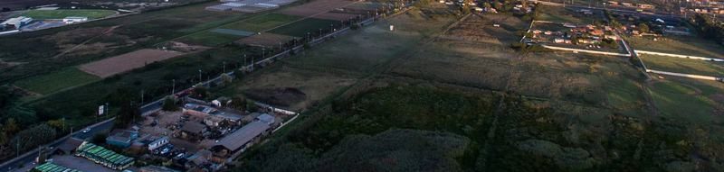
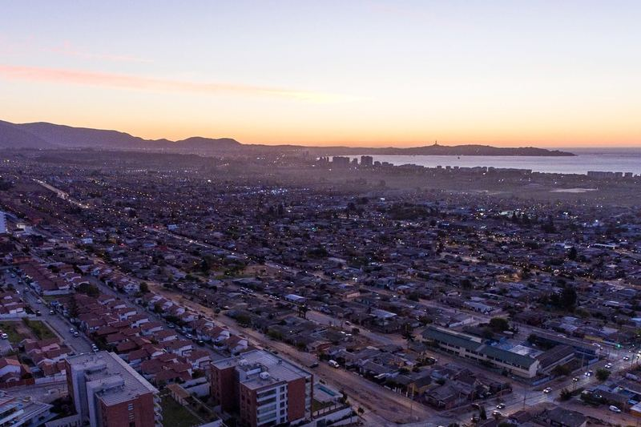
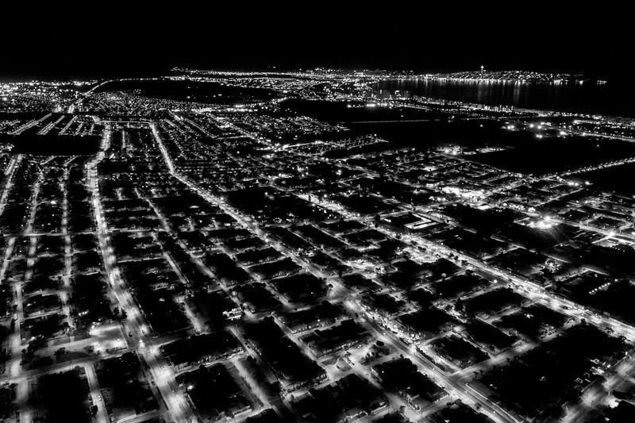
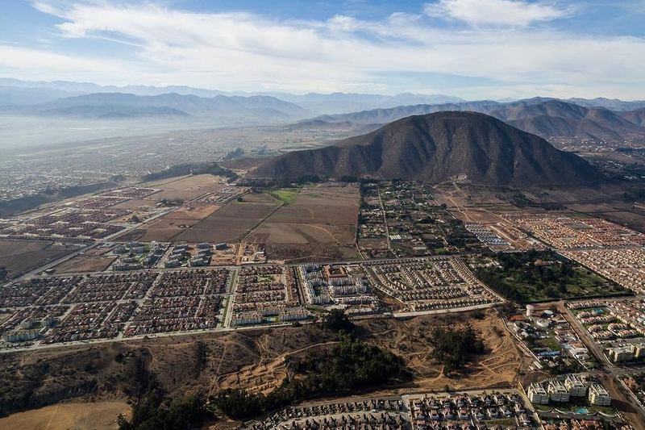
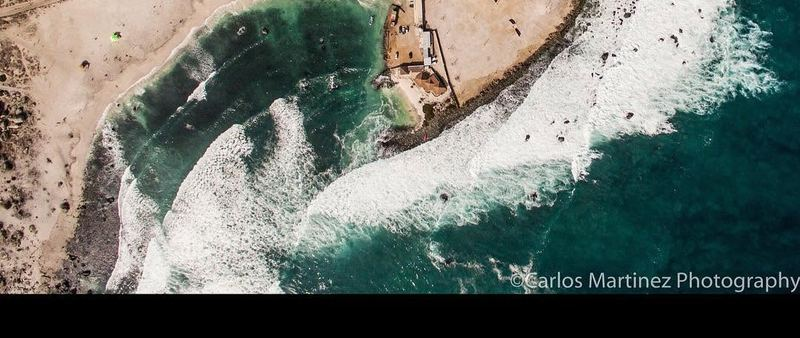
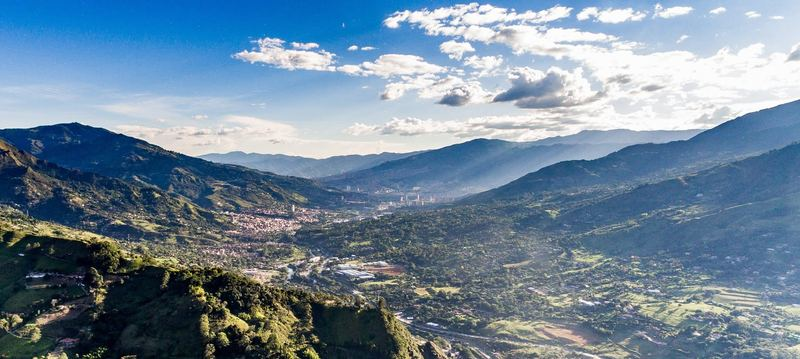
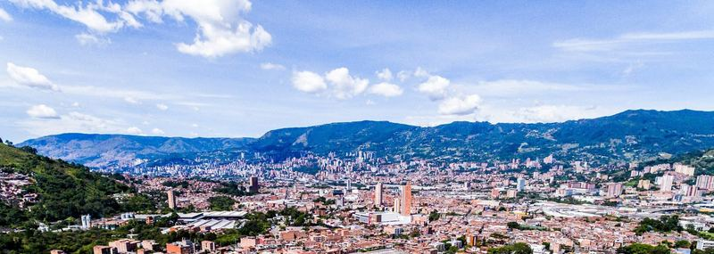
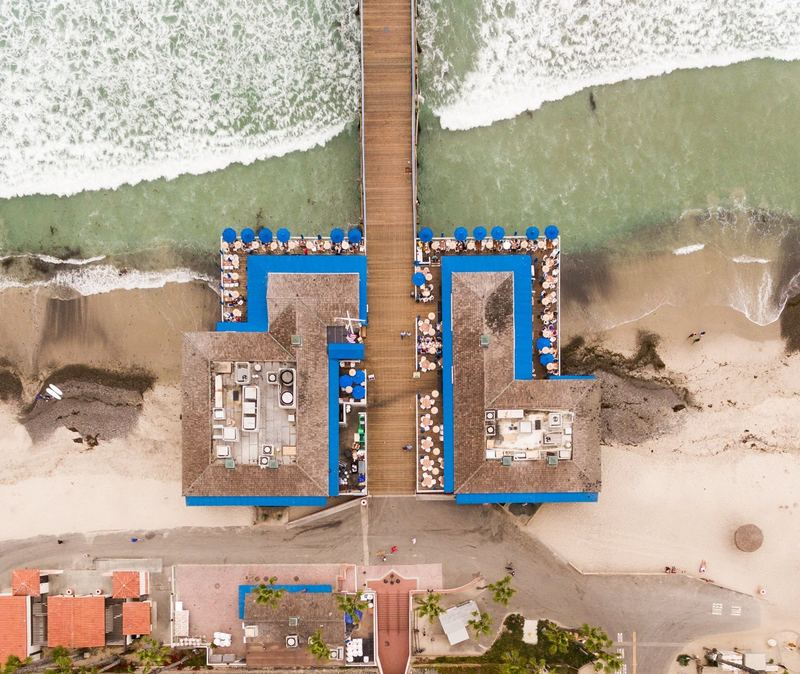
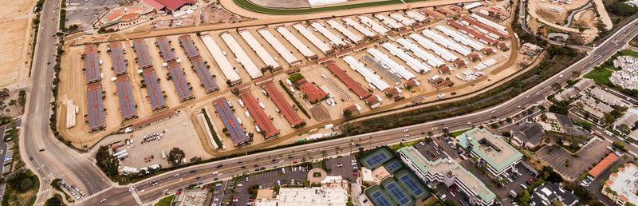
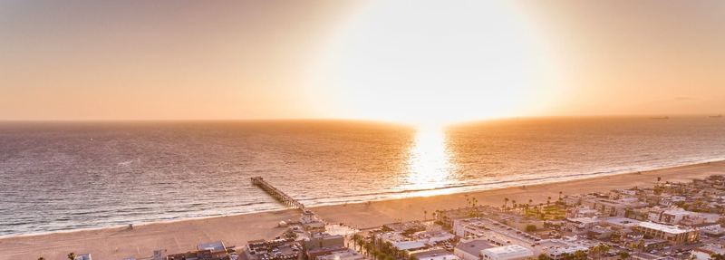
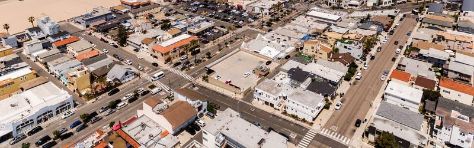
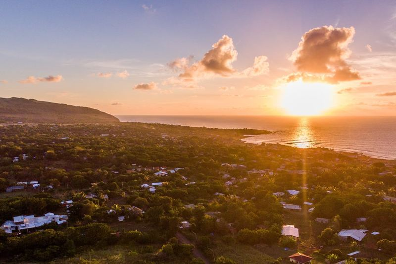
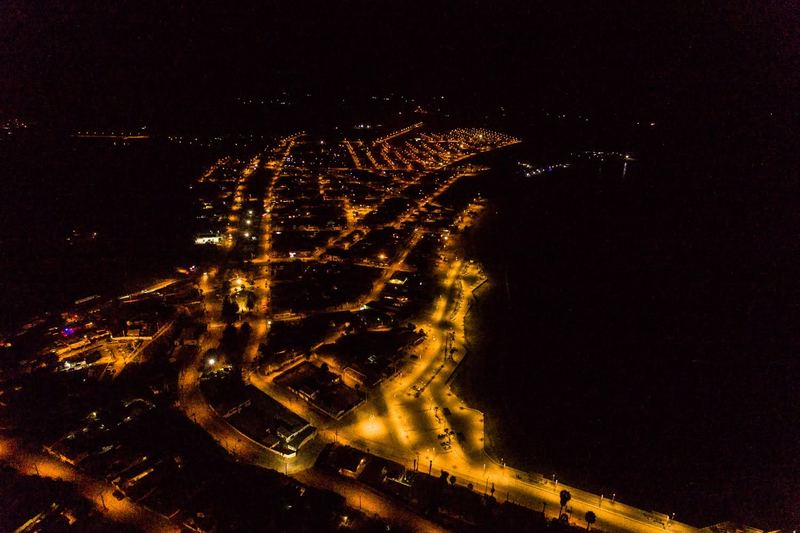
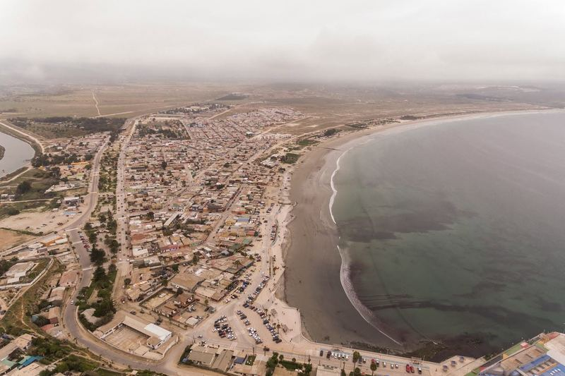
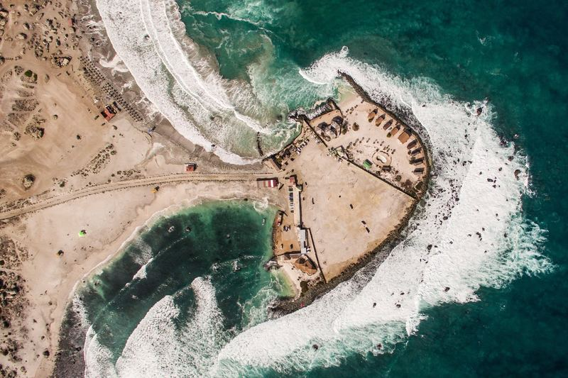
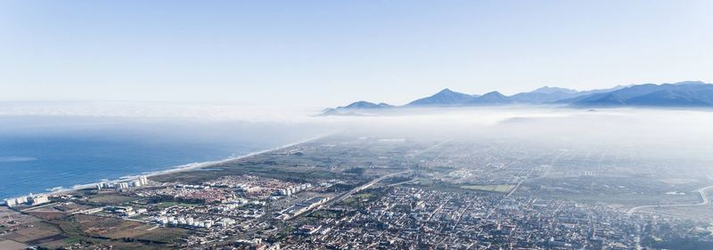
Need coverage like this?
Motorsport, events, aerials and commercial work — in Chile and abroad. Archive images available for licensing.
License this event Get in touch WhatsAppMore galleries
WRC Rally Chile 2019
Rally Raid — Atacama Desert
Grand Prix of Long Beach 2018
ISDE Chile — Six Days of Enduro
Mountain Bike Enduro — Chile
Opening Day at Del Mar
St. Patrick's Day Parade — Hermosa Beach
Lebowski Fest LA 2013
On the Poker Tour
Live Music
Portraits
Playas de Tijuana
San Francisco & Los Angeles
Las Vegas Nights
San Diego Waterfront & Downtown
Andes & Glaciers
Coast, Travel & Wildlife